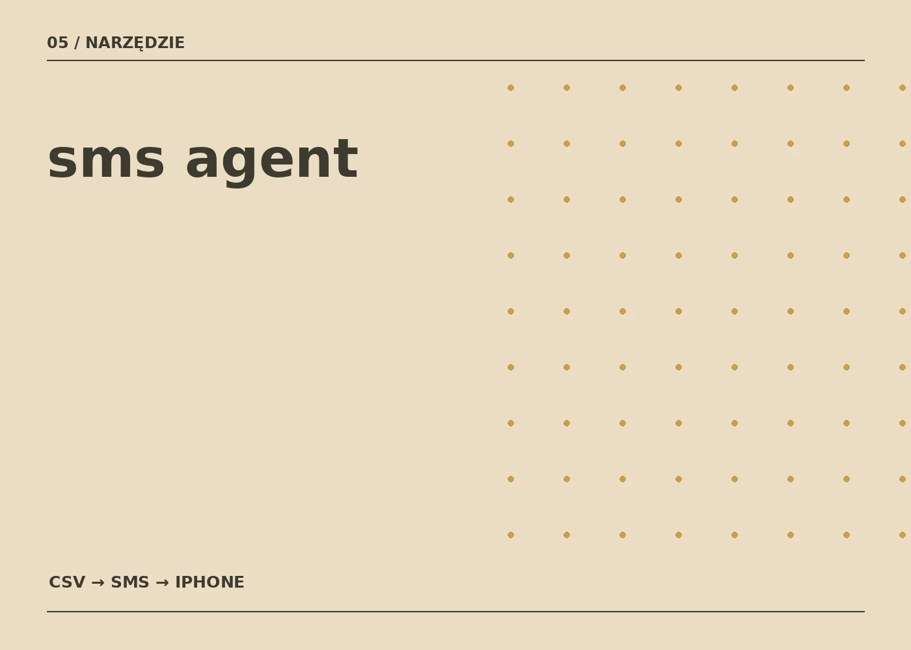

Wróć do projektów
Narzędzie / Koncepcja
SMS Agent.
Prosty skrót między listą a wiadomością.

O projekcie
Pomysł na narzędzie, które bierze kontakty z CSV i pozwala wygodnie przygotować SMS-a z telefonu.
Założenie: import pliku z nazwami firm i numerami telefonów, przejrzenie listy i uruchomienie gotowej wiadomości na iPhonie. Obecnie to koncepcja, a nie publicznie dostępny produkt.
Uwaga: Widoczna grafika to okładka projektowa, nie zrzut działającej strony. Można zastąpić ją rzeczywistym screenem projektu.
Masz podobny pomysł?
Napisz do mnie